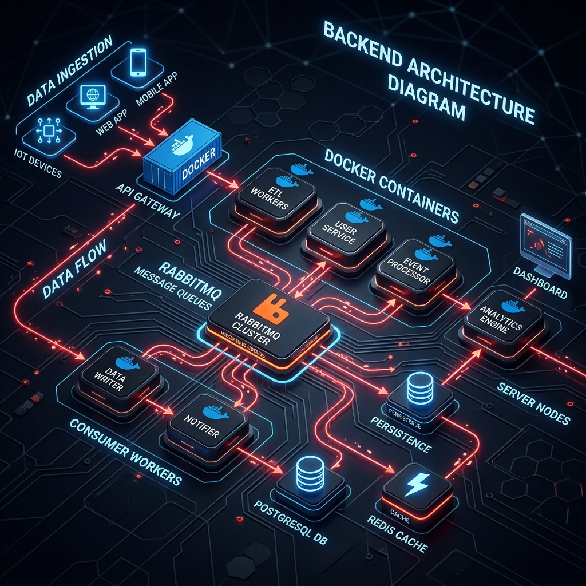
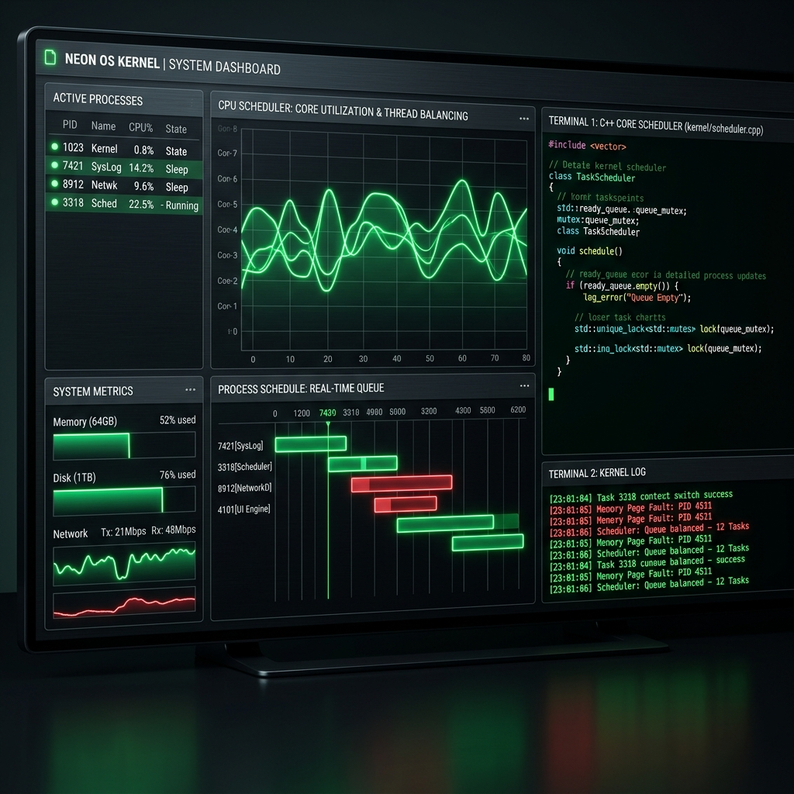
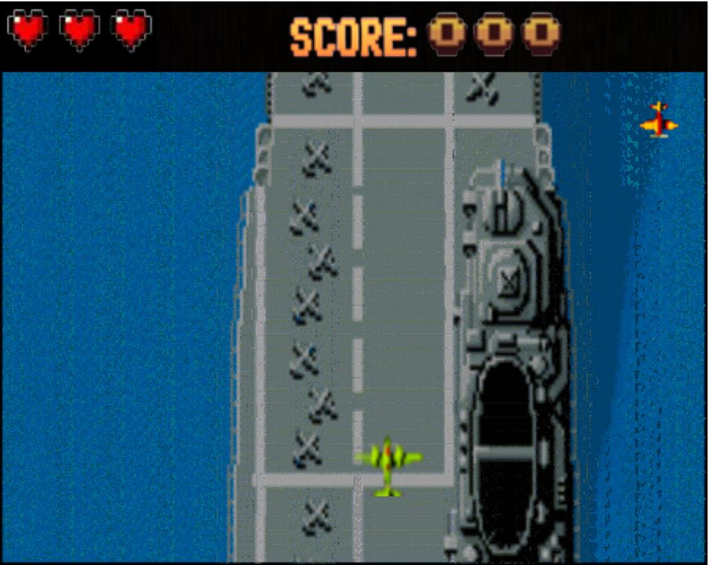
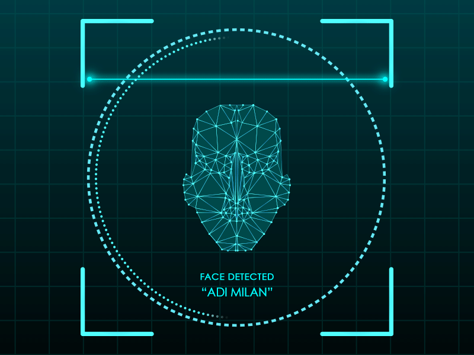

Si hay un muro, lo hacemos pedazos, y si no hay ningún camino, ¡lo abrimos con nuestras propias manos!
Construyendo sistemas distribuidos, robustos y eficientes.
If there's a wall, we smash it, and if there's no path, we carve it with our own hands!
Building distributed, robust, and efficient systems.
¡Hola! Soy programador, desarrollador y estudiante de Ingeniería en Sistemas en la Universidad Tecnológica Nacional de Buenos Aires (UTN - FRBA).
Hi! I am a programmer, developer, and Information Systems Engineering student at the National Technological University of Buenos Aires (UTN - FRBA).
Actualmente me dedico a construir proyectos robustos, bien documentados y eficientes, con un fuerte enfoque en el backend y la arquitectura hexagonal. Desde el desarrollo de sistemas operativos en C/C++, hasta el despliegue de soluciones completas utilizando Java, Docker, bases de datos y colas de mensajería como RabbitMQ.
I currently focus on building robust, well-documented, and efficient projects, with a strong emphasis on backend and hexagonal architecture. From developing operating systems in C/C++, to deploying complete solutions using Java, Docker, databases, and message brokers like RabbitMQ.
Disfruto desarrollando mis ideas a través de las herramientas que me da el código para expresarme.
I enjoy bringing my ideas to life through the tools that code provides to express myself.
Ingeniería en Sistemas de Información
Information Systems Engineering
Desarrollo Web Completo (HTML5, CSS3, JS, PHP)
Full Stack Web Development (HTML5, CSS3, JS, PHP)
Buscando desafíos técnicos para seguir escalando.
Looking for technical challenges to keep scaling.

Plataforma distribuida de gestión y trazabilidad de donaciones para UTN Solidaria. Diseñada bajo Arquitectura Hexagonal y DDD, microservicios desacoplados con eventos asíncronos en RabbitMQ, persistencia en PostgreSQL y contenedores Docker.
Distributed donation management and traceability platform for UTN Solidaria. Built with Hexagonal Architecture and DDD, decoupled microservices with asynchronous domain events in RabbitMQ, PostgreSQL persistence, and Docker deployment.

Simulación distribuida de sistema operativo y kernel multi-proceso sobre red TCP/IP simulando hardware real. Incluye planificador multinivel en 7 estados (FIFO, RR, VRR), sincronización con semáforos POSIX, ciclo de instrucción con CPU, y MMU/TLB con paginación y swap.
Distributed multi-process operating system and kernel simulator over TCP/IP simulating real hardware. Includes a 7-state multilevel scheduler (FIFO, RR, VRR), POSIX semaphore synchronization, CPU instruction cycle, and MMU/TLB with dynamic paging and disk swap.

Remake del legendario juego arcade de combate aéreo 1942 en Wollok Game. Implementa un motor con arquitectura modular, Game Loop determinístico, gestión de estados (State Pattern), resolución polimórfica de colisiones con Double Dispatch puro y suite de 42 pruebas unitarias automatizadas.
Remake of the legendary 1942 aerial combat arcade game built in Wollok Game. Features a modular engine, deterministic Game Loop, State Pattern management, pure Double Dispatch polymorphic collision handling, and a 42-unit-test automated test suite.

Ingeniería de software de bajo nivel y teoría de compiladores (UTN-FRBA). Implementación en C de Autómatas Finitos Deterministas (DFA) con matrices de transición, analizador léxico manual y con Flex, parser sintáctico con Bison, gestión manual de memoria y Makefiles idempotentes.
Low-level software engineering and compiler theory (UTN-FRBA). C implementation of Deterministic Finite Automata (DFA) with transition matrices, manual & Flex lexical scanner, Bison syntactic parser, manual memory management, and idempotent Makefiles.
Actualmente me encuentro abierto a nuevas oportunidades y proyectos desafiantes. Ya sea para una oferta laboral, dudas sobre arquitectura, o simplemente para charlar sobre sistemas, mi bandeja de entrada está siempre abierta.
I am currently open to new opportunities and challenging projects. Whether it's a job offer, questions about architecture, or just chatting about systems, my inbox is always open.